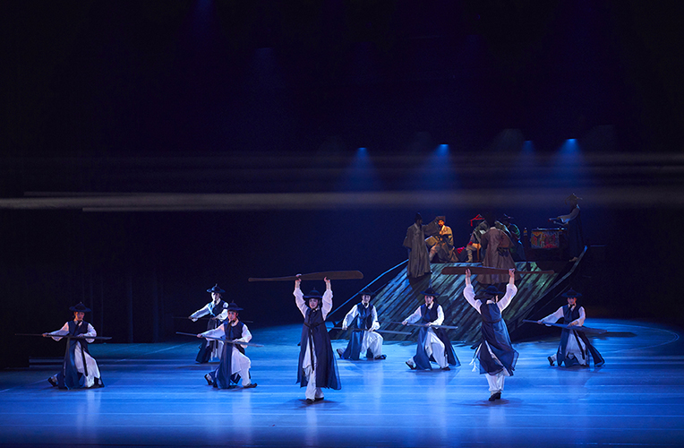
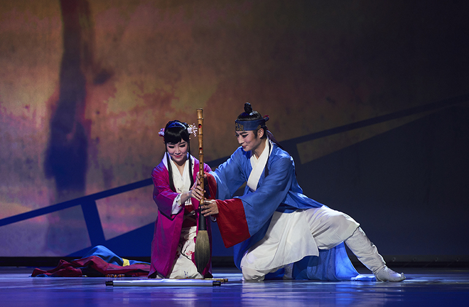
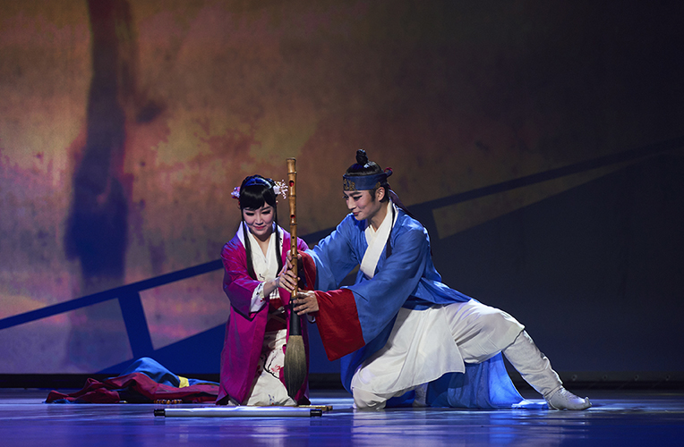
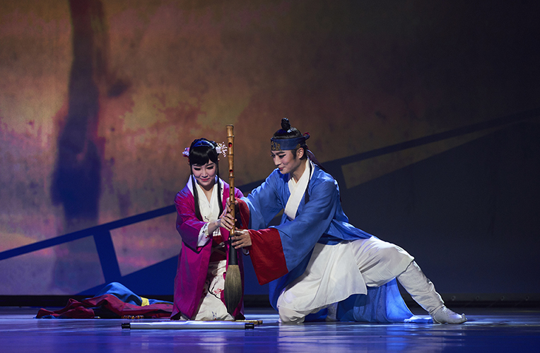

Korean Wave Promotion Gugak Concert <Dance of Joseon Envoys – Secret of Yuma painting> SeasonⅡ
- Time
- May. 3.(Wed) ~ 6(Sat), 10.(Wed) ~ 13.(Sat) Weekdays 20:00, Weekends 15:00
- Venue
- Yeonak-dang Hall
- Ticket Price
- S seat 20,000won, A seat 10,000won
- Cast/Direct
- Busan National Gugak Center Traditional Music Orchestra Vocal Music Group, Dance Theater Art director_Yu Gyeong-jo (Music groups) Jeong Sin-hye (Dance Theater) Producer_Jo Ju-hyeon Script writer_Cheon Jeong-wan Composer_Kim Baek-chan Choreography_Jeong Sin-hye Assistant Choreographer_Bak Suk-yeong
- Audience Age
- Children in elementary school or older
A dance drama depicting the story of Envoy to Japan during the Joseon Dynasty, one of the Busan’s historic-cultural contents.
A novel titled “Yumado” written by Gang Nam-ju depicts the journey of Joseontongsinsa, goodwill missions sent intermittently, at the request of the resident Japanese authority during the Joseon period. The story begins with a secret related to “Yumado” a painting sketched by an unknown painter Byeonbagi who was in the envoy. The drama presents historical meaning of the documents about the envoy which was designated to UNESCO Memory of the World Program, and implies cultural peace building between Korea and Japan by a continuous cultural exchange and collaboration.
Program
Prologue 1 movement. Ritual for the Sea God 2 movement. Voyage 3 movement. Joseon Envoys Epilogue. Yumado Island

 

